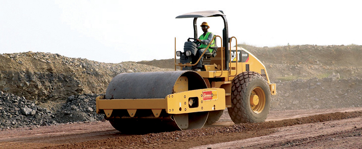
<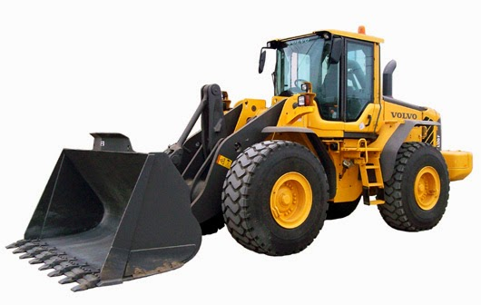
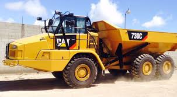
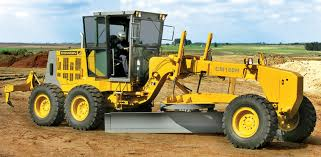
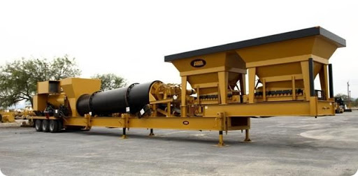
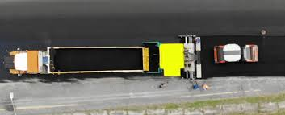
Disponibilidad Inmediata, Caterpillar, Volvo, Case.
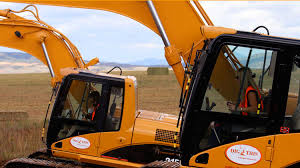
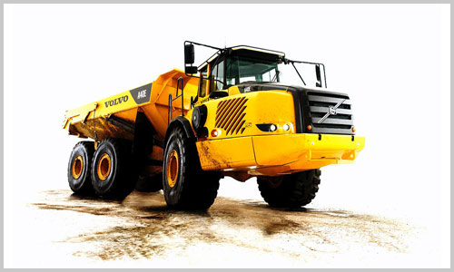
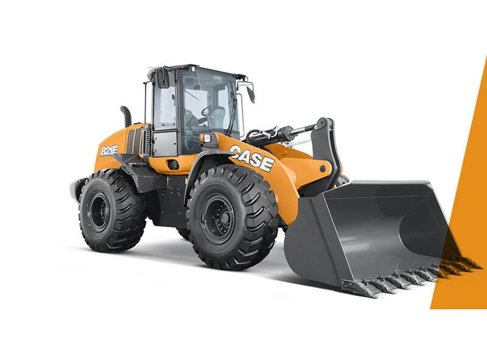
Terracerias: Estabilizacion de Terrenos por medio de anclas, aplicacion de concreto lanzado, equipo disponible para su obra: traxcavos, retroexcavadoras, motoconformadoras, etc.
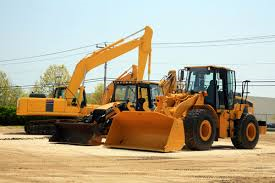
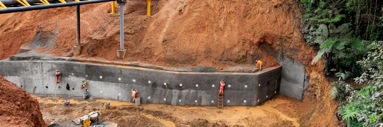
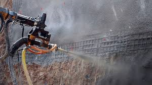
Cimentacion, elevacion, asfalto y trituracion, transporte de equipo, renta de Maquinaria a toda la Republica Mexicana.
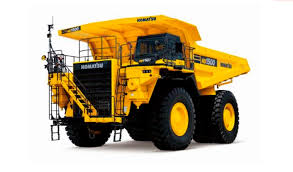
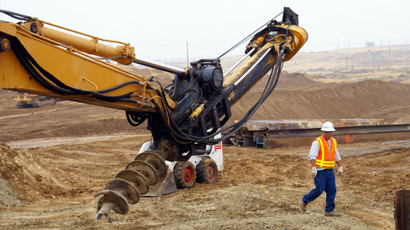
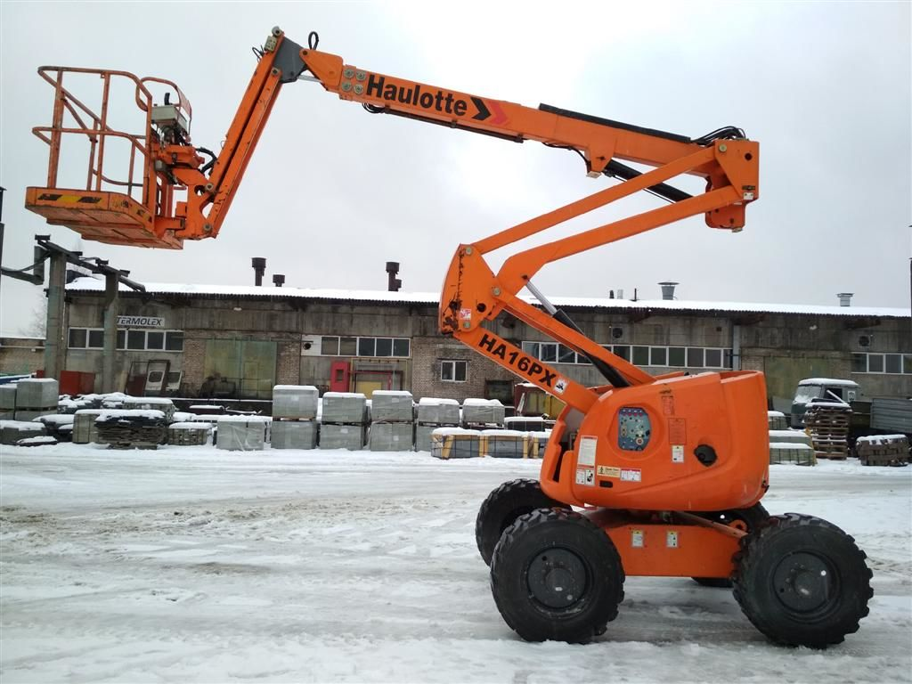
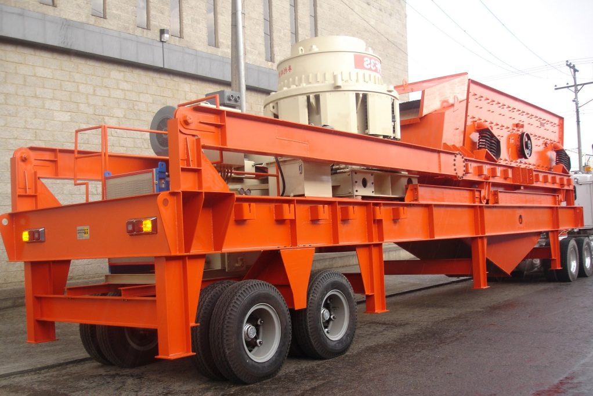
EL MEJOR EQUIPO A SU ALCANCE
Cada equipo tiene su fortaleza y está fabricado para trabajar de manera óptima, ya sea para agricultura, asfalto, camiones fuera de carretera, canteras, agregados, industria cementera, construcción, demolición y reciclaje de chatarra, generación de energía, grúas, maniobras de carga especializada, manipulación de materiales, pavimentación y equipo ligero.
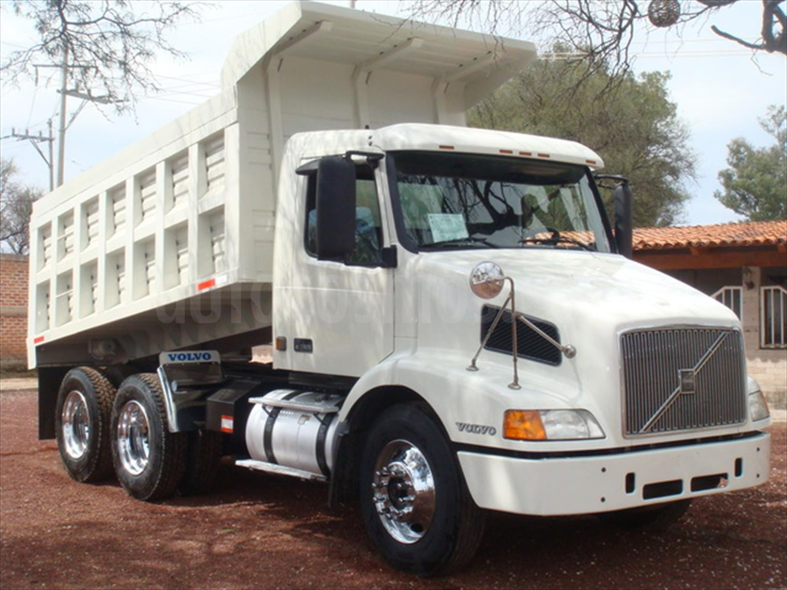
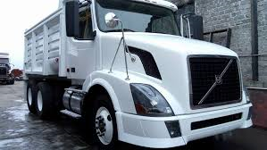
Otorgamos la flexibilidad de compra, venta, renta por el plazo que usted requiera con el rendimiento y la productividad que espera, juntos diseñaremos una solución que apoye el crecimiento de su empresa minimizando riesgos y optimizando costos, nuestra gama de equipos nuevos nos permite apoyarlo en satisfacer sus necesidades de aplicación. Pregúntenos, juntos lo definiremos.
CONTACTO
comercializadora.hermanos.afrin@gmail.com
DIRECCION
Calle Nicolas Romero 407 5 Piso, INT 1-A, C.P.42000, Pachuca de Soto,HGO
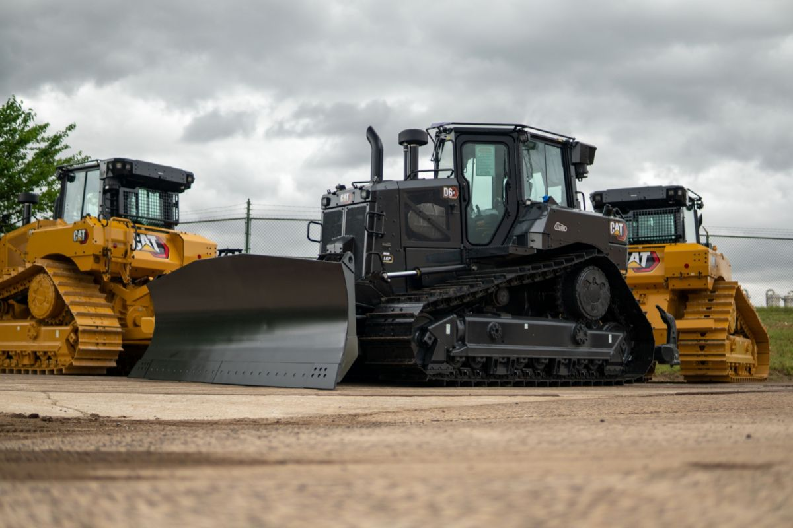
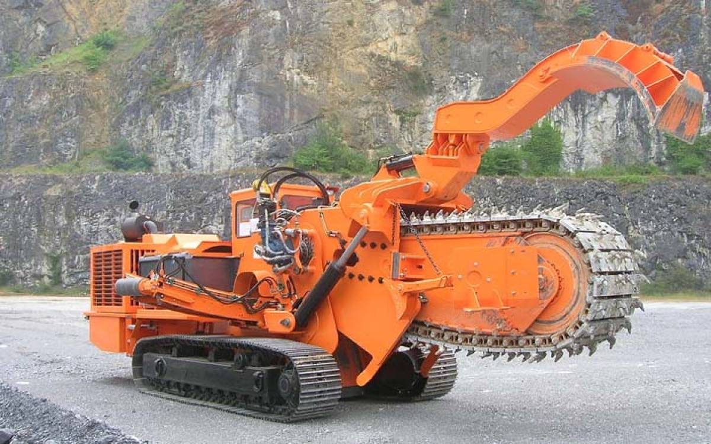